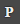
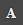
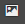

Document Template¶
Purpose¶
The purpose of this document is to explain what a Document Template is and how to create it. You will be guided through the different stages that are involved in building a new document template.
Target Audience¶
This document is intended for template designers and system administrators.
Overview¶
Document template contains guides, styles, page attribute placeholders, “static” elements, and so on. A designer starts the preparation of document template using Adobe © InDesign ©. It is a physical .indd Adobe © InDesign © file. It does not contain actual information, but it just contains the layout and data dimension. It serves as a starting point of a document. A designer can define the Workable Area in a document template, where a planner can plan and place the products. A designer can use the rest of the area of a document template, which is not defined as the Workable Area, to place the header, footer, logo, or background image. Once you create the document template in Adobe © InDesign ©, you can play with it using the Whiteboard of Contentserv system. You can plan how products should be placed in a document template using Whiteboard. You can define Slots in a document template to place the products in the Slots using Whiteboard. These document templates are used in creating publication templates.
Key Terms¶
CS Desktop Publisher: the Desktop Publisher is an Adobe © InDesign © Plugin for simple data transfer and updating functions. It is available as an additional option for templates and dynamic editing in the print sector. The Desktop Publisher allows you to use and update Contentserv system objects in Adobe © InDesign © documents. Frames and individual texts will be assigned to variables which can connect them to system objects like products or images.
Whiteboard: whiteboard is a feature in Contentserv system, which is similar to Adobe © InDesign © application. There are two types of the target audience who will be involved in the publications. One is a planner who will actually plan the publication. The other one is a designer, who will make the layout and will prepare the templates using Adobe © InDesign © software. Whiteboard will help the planner to plan how a publication should look like.
Workable Area: the workable area is defined while creating a document template in Adobe © InDesign ©. A designer will define this area using an Adobe © InDesign © frame in a document template. The workable area is a dynamic area where products will be placed in Whiteboard.
Slot: a slot is a place in a document template where a product is placed while planning of a document template in Whiteboard. The planner will split the defined Workable Area of a document template into N number of rows and columns according to his need in Whiteboard. Thus, he will create a slot, which is a separate space for each product. Now, a planner can place products into separate slots, where one slot will contain a single product.
Icons of CS Desktop Publisher Window¶
| Sr. No. | Icon | Icon Name | Details |
|---|---|---|---|
| Document Template | It will show the list of document templates created in an Adobe © InDesign © application. | ||
| Product Template | It will show the list of product templates created in an Adobe © InDesign © application. | ||
| Publication | It will show the list of publication templates in an Adobe © InDesign © application. | ||
|  | Product | It will show the list of publication templates in an Adobe © InDesign © application. | |
|  | Attribute | It will list all the marketing articles, which are created in Contentserv system. | |
|  | Images | It will show all the images, which are created in Contentserv system. | |
| Show Sync Status | This option enables you to keep the sync of a document template. It is useful when you are preparing the document template in Adobe © InDesign ©, and making the modifications in a document template in Whiteboard as well. | ||
| Logout | It will log you out from CS Desktop Publisher. It will terminate the current session for CS Desktop publisher. | ||

|
Create Template | It is used to create a new document template. | |
| Save/ Upload | It is a Save/ Upload option. It will save the details of a document template and it will upload the created document template in Contentserv system. | ||
| Define Workable area | It helps to define the Workable Area in a document template. | ||
| Refresh | It is a refresh feature. This feature is useful when a planner and a designer are working simultaneously on a document. Whenever a planner makes any changes in a document template via Whiteboard and saves the details in Whiteboard, this refresh icon will blink in Adobe © InDesign ©. So, a designer will get to know that a planner has made modifications in a document template via Whiteboard. When a designer clicks on this icon, all the changes that the planner has made in a document template via Whiteboard, will be reflected in Adobe © InDesign © document. | ||
| Accept Changes | This is an accepted change feature. A designer will select the changes made by a planner and click on this icon to accept the changes. | ||

|
Delete | This deletes feature. A designer will select the changes made by a planner and click on this icon to reject or delete the changes. | |
| Select All | This is select all feature. A designer will select all the changes made by a planner by clicking on this icon. The designer can either accept or delete all the changes made by a planner at a time with the help of this feature. |
How-to: Create Document Template¶
To create document template, follow these steps:
Install DTP¶
- Install CS Desktop Publisher client in your system to use and update CONTENTSERV objects in Adobe © InDesign © documents.
Connect to DTP¶
- Once you install CS Desktop Publisher client in your system, open Adobe © InDesign © and connect to DTP client.
Create New Document Template¶
- CS Desktop Publisher pop-up window contains the details of Contentserv system (ex: articles, products, images, etc).
- Click on Create Template icon from CS Desktop Publisher pop-up window to create a document template.

Define the Workable Area¶
- Find a blank page where you can put all the styles, designs and anything that you want to add in a document template.
- Select the frame from the left side panel of a screen to define a workable area.
- Place the frame across the document to define a Workable Area in a document.
- Click on the Define Workable area icon to define the frame area as a Workable Area. You can define the entire document as a Workable Area or you can use portions of a document as a workable area. It is up to you how you want to design a document template.
Add Frames¶
- Suppose you have used some portion of a document as a Workable Area and you want to add some text in rest of the area of a document, then you can do so by clicking on T icon frame located in the left side panel of a screen.
- Click on Text icon frame and place the frame across the portion of a document where you want to define static text in a document.
- Now, enter the text in this framed area that you want to add in a document template.
How to Add Pages in a Document Template¶
- In addition to this, you can add as many pages as you want in a document template. Locate the Pages icon option on the right side panel of the screen.
- Select Pages icon option and click on Create Page icon to create a page in a document template.
- Define Workable Area in each page of a document template.
Save/Update Document Templates in Adobe © InDesign ©¶
- Once you have added all the elements in a document template, click on the Save/Upload icon to save and upload it to the Contentserv system.
- Once you click on Save/Upload icon, then you will find a prompt on the screen. Enter Template Name and click on the Upload button. It will save this document template in Adobe © InDesign © and upload it to the Contentserv system.
Check Sync Status and Accept or Reject Changes¶
- You can sync the changes in Adobe © InDesign © document template, that you made in Whiteboard. This is necessary when you work in a document template at both places; in an Adobe © InDesign © and in Whiteboard of Contentserv system. You can click on Show Sync Status icon located in the CS Desktop Publisher window to know the sync status of a document template.
- A designer can accept all the changes made by a planner. In this case, a designer will select the changes and click on Accept Changes icon in SyncStatus window to accept the changes.
- A designer can delete or reject all the changes made by a planner. In this case, a designer will select the changes and click on the Delete icon in SyncStatus window to delete the changes.
- A designer can select all the changes made by a designer at a time by clicking on Select All icon in SyncStatus window. Thus, the designer can either accept or delete all the changes in one go.